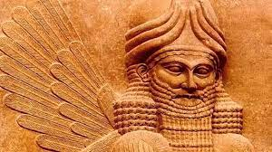
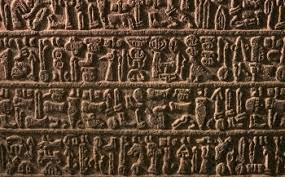

Principais Características dos Sumérios
A civilização suméria se destacou em várias áreas: organização política (cidades-estado), arquitetura, agricultura, comércio. O calendário surgiu entre esse povo, em 2700 a.C. Antes disso, surge a escrita cuneiforme e, por volta de 3200 a.C., os livros têm origem também com os sumérios. O desenvolvimento do seu comércio garantiu a riqueza desse povo. Eles produziam e vendiam artesanato, cerâmica, bem como produtos agrícolas, e eram responsáveis por um sistema de irrigação bastante complexo. Os sumérios eram politeístas, ou seja, acreditavam na existência de vários deuses. Era grande o culto especialmente à Ishtar - a deusa da fertilidade -, a qual representa as forças da natureza e cujo símbolo é uma estrela de cinco pontas. Importa referir que nada se sabia sobre esse povo tão importante até o século XIX. As inúmeras descobertas devem-se aos estudiosos que foram levados à região a fim de tentar confirmar as histórias narradas na Bíblia.

A Língua Suméria
Língua suméria era o idioma falado pelos sumérios e foi o primeiro a ser escrito através da escrita cuneiforme, que foi a primeira forma de escrita. Por meio de centenas de símbolos desenhados da direita para a esquerda (pictogramas), a escrita cuneiforme era feita com instrumentos que tinham a forma de cunha.Os registros mais antigos de documentos sumérios são um conjunto de textos administrativos datado de 3200 a.C.; estudiosos, porém, acreditam que possam pertencer a outra língua, uma vez que nele consta um número elevado de ideogramas que podem ser lidos em outros idiomas.